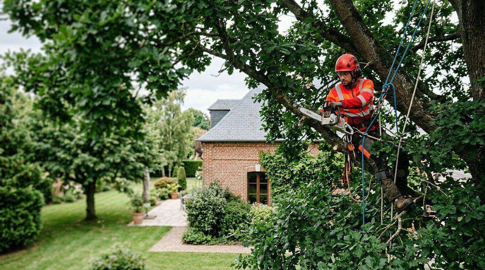
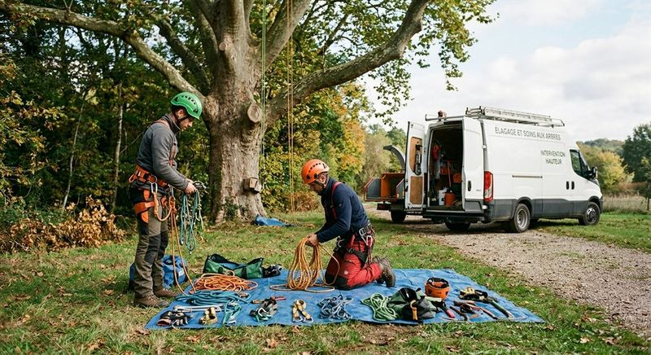
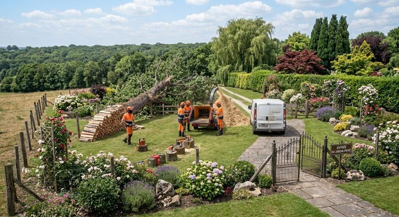
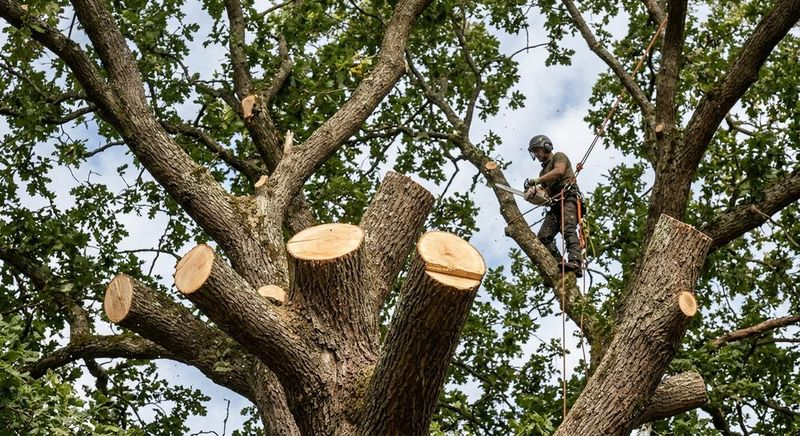
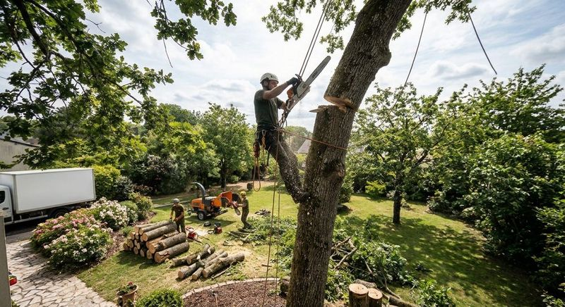
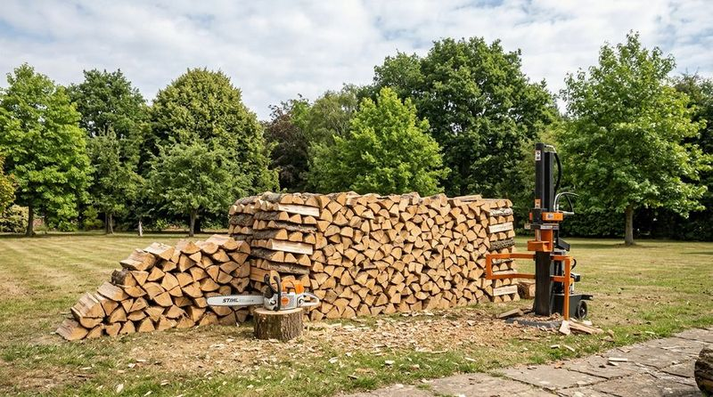

Dessouchage
Retirer la souche pour récupérer le terrain et replanter ou aménager.
Les arboristes grimpeurs d’Au Cœur de l’Arbre interviennent à Étampes et dans l’Essonne : élagage, abattage, dessouchage, haubanage et gestion des rémanents.




Taille de réduction, entretien de la ramure, arbre trop proche d’une maison ou d’une ligne : le grimpeur accède à la cime sans abîmer votre terrain.

Quand un arbre ne peut plus être conservé ou que l’espace est trop étroit pour le faire tomber, l’abattage par démontage permet de le descendre en sécurité.
Retirer la souche pour récupérer le terrain et replanter ou aménager.
Soutenir un arbre fragile ou intervenir là où l’accès est difficile.
Branches, bois et copeaux évacués ou valorisés : le chantier est laissé net.

L’équipe s’engage à vous accompagner du premier conseil jusqu’au suivi, et à respecter vos demandes comme les délais convenus.
Au-delà de la taille, l’équipe intervient sur des situations particulières. Décrivez la vôtre, elle vous indique la bonne approche.
Une intervention adaptée selon la situation de vos arbres.
Des solutions respectueuses du végétal et de son environnement.
Un regard de professionnel sur l’état et l’avenir de vos arbres.
Deux sujets à aborder directement avec l’équipe pour votre chantier.
Racontez votre situation, le devis est gratuit.